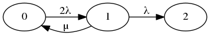

2.5.1
Es soll die im Skriptum 2.5.6 angegebene Formel für die MTTDL bei RAID 1-Konfigurationen hergeleitet werden:
a) Erstellen Sie dazu einen Markovschen Übergangsgraphen!

b) Berechnen Sie die exakte MTTDL!
???
A0=λ1+μ1λ0⋅λ1=
c) Wieso ist die im Skriptum angegebene Näherung gerechtfertigt?
MTTFn ist zu vernachlässigen, da verschwindend gering.